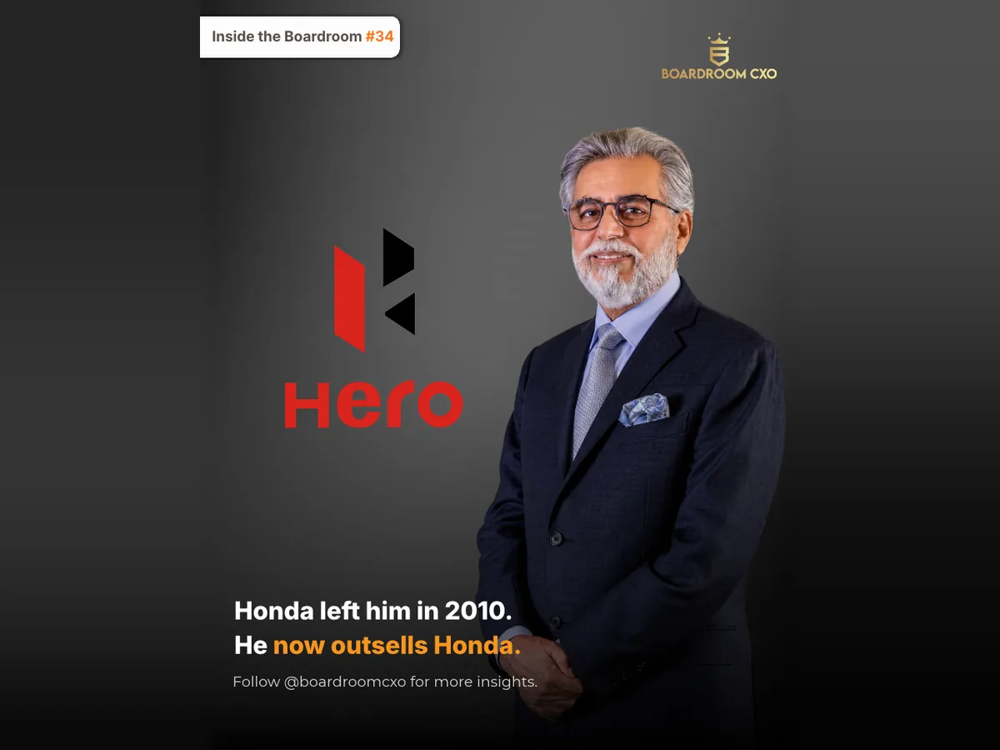

Key Takeaways
- On 16 December 2010, Honda agreed to sell its 26 per cent stake in Hero Honda, ending a 26-year partnership, even though Hero Honda had sold 46 lakh two-wheelers in the previous year, 48 per cent of the Indian market.
- Pawan Munjal chose to build Hero MotoCorp's own engineering: by 2013 its R&D engineers had doubled to 400, it offered an industry-first five-year warranty in April 2013, and it opened an ₹850 crore research centre near Jaipur in 2016.
- Hero crossed 100 million two-wheelers produced in January 2021, and in FY26 it sold about 60.7 lakh two-wheelers in India against about 57.5 lakh for Honda, a lead of more than 3 lakh units.
"This is the most important announcement I have made in last 25 years."
Pawan Munjal, then managing director and CEO of Hero Honda, said that on 16 December 2010. He was announcing the end of the partnership that had built India's biggest two-wheeler company.
Honda was leaving. Hero would have to stand on its own.
What the Hero Honda Split Meant
Hero Honda was set up in 1984, with Honda holding 26 per cent. For 26 years, the Munjal family ran the factories, the dealers and the brand. Honda supplied the engines and the technology.
The deal looked very good on paper. In the year to March 2010, the last full year before the split, Hero Honda sold 46 lakh two-wheelers. That was 48 per cent of the Indian market. In the mass 100cc motorcycle segment, the bikes most Indians rode to work, its share was over 60 per cent.
But the strength was borrowed. Under the agreement, the Munjal family's group would buy Honda's entire 26 per cent stake. Honda would license the existing models for a while. After that, new products would have to come from Hero itself.
Few people believed that would go well. Honda's own Indian unit was growing fast. Shinji Aoyama, Honda's chief operating officer for motorcycles, said its Indian business might overtake Hero MotoCorp by 2015 or 2016.
For a while, the numbers seemed to agree. In September 2012, Hero sold 4,04,787 two-wheelers, about 26 per cent fewer than a year earlier. Analysts blamed rising stock at dealers. The market wanted to know whether a company that had never designed its own engines could keep its customers.
"Everyone was watching us through a magnifying glass," Munjal told Business Today in 2013. "We needed to do better."
Who Is Pawan Munjal?
Pawan Munjal is the Executive Chairman of Hero MotoCorp. He was born in 1954, the son of Brijmohan Lall Munjal, who founded the Hero group as a bicycle maker. He studied engineering at what is now the National Institute of Technology, Kurukshetra.
He spent his working life inside Hero Honda and was its managing director and CEO at the time of the split. He became chairman in 2015. In January 2026, Hero brought in Harshavardhan Chitale as CEO, and Munjal continues as Executive Chairman.
How Hero MotoCorp Built Its Own Engineering
The easy answer would have been to find another foreign partner and license its technology. Munjal took the harder road. He decided Hero would learn to design its own bikes.
He was clear about the stakes. Business Today reported a line he said in Punjabi to an acquaintance soon after the split: "Even if I have to go down, I will go down fighting."
The company was renamed Hero MotoCorp in July 2011. Then came the work.
- More engineers. By 2013, the number of engineers in Hero's research and development department had doubled to 400.
- Specialist help, not a new master. Hero signed up firms for specific jobs: Erik Buell Racing in the US, Engines Engineering and Magneti Marelli in Italy, and AVL in Austria for engines. They worked for Hero. None of them owned the product.
- A research campus of its own. Hero planned a campus of about 250 acres at Kukas, near Jaipur. Work started in 2013, and the Centre of Innovation and Technology opened in March 2016 at a cost of about ₹850 crore.
Then, in April 2013, Hero made a public promise. It offered a five-year warranty on all its motorcycles and scooters, up to 70,000 km for motorcycles. Business Standard reported it as the first time an Indian two-wheeler maker had offered a five-year warranty.
For a company that had just lost its technology partner, it was a bold signal. If its own engineering failed, Hero would pay for the repairs.
What Going It Alone Delivered
The promise held. Hero did not lose its place.
In January 2021, Hero MotoCorp crossed 100 million two-wheelers produced since it started. The company said it was the only Indian automaker to reach that mark. The 100 millionth bike, an Xtreme 160R, came off the line at its Haridwar plant.
The Honda prediction did not come true either. In FY26, Hero sold about 60.7 lakh two-wheelers in India. Honda Motorcycle and Scooter India sold about 57.5 lakh. Hero's lead over Honda in the domestic market was more than 3 lakh units.
Fifteen years after Honda walked away, the company that was told it could not stand alone is still India's largest two-wheeler maker.
The Boardroom Lesson: Build Capability Before You Need It
Many Indian companies grew strong on a foreign partner's technology. The risk is that the partner's strength starts to feel like your own. When the partner leaves, the board finds out how much the company really knows.
A partner can lend you its strength. Only you can build your own.
Munjal's choice was not to replace one dependence with another. He hired engineers, bought in specialist help on Hero's terms, and then backed the result with a warranty the market could test.
Common Mistakes Boards Make When a Technology Partner Leaves
When a joint venture ends, boards tend to repeat the same three errors.
They look for a new partner first. A second licence can buy time, but it repeats the same weakness. Hero used outside firms for specific tasks and kept the design work at home.
They judge the decision on the first bad year. Hero's September 2012 sales looked like proof that the split had failed. The real test came years later, once its own products reached the market.
They hire leaders who have only run borrowed technology. Running a licensed product well is a different skill from building one. A business that must stand alone needs engineering and product leaders who have built from scratch before.
A Framework for Leadership After a Joint Venture Ends
When we brief boards on a leadership search after a partner exits, we push for three specific checks.
- Map what the partner really supplied. List the skills, processes and people that sat with the partner. That list is the hiring plan.
- Hire builders for the gaps. Look for leaders who have set up research teams, launched their own platforms or moved work in-house, not only those who managed a licence.
- Agree a public test of confidence. Hero's five-year warranty told customers and investors that the engineering was real. Boards should decide early what promise will show the market the company can stand alone.
Why This Belongs in the Boardroom, Not Just the Business Pages
This story sits beside Rajiv Bajaj and the Chetak and Siddhartha Lal at Royal Enfield. In each case, an Indian two-wheeler maker was told it could not win on its own terms, and a leader chose to build rather than borrow.
A borrowed engine runs until the lender leaves. A built one keeps running.
Sources
- Business Today, Hero Honda splits, Munjals to buy 26% stake, December 2010
- Honda Motor Co., Honda and its Indian Partners Agree to Dissolve Motorcycle Joint Venture in India and Sign New License Agreements, December 2010
- Business Standard, From pillion to the rider's seat, December 2010
- Business Standard, Hero MotoCorp, Bajaj Auto dip on weak September sales, October 2012
- Business Standard, Hero announces five-year warranty on all two-wheelers, April 2013
- Business Today, Pawan Munjal has a new Hero in his sights, July 2013
- Autocar Professional, Hero MotoCorp crosses 100 million cumulative production milestone, January 2021
- Autocar Professional, Hero Motocorp Maintains Leadership in FY26 Domestic 2W Sales, Widens Gap With Honda, April 2026
Related Reading
Rajiv Bajaj Walked Away From Scooters. Then He Rebuilt the Chetak Name.
Read → R · 02 Founder Leadership · August 2026Everyone Said Royal Enfield Was Finished. Siddhartha Lal Asked for Two Years.
Read → R · 03 Founder Leadership · October 2026R C Bhargava: Maruti's Share Hit a 13-Year Low. It Still Sold a Record 24 Lakh Cars.
Read →Losing a partner, a licence or a parent's technology and need leaders who can build?
We screen for engineering, product and business leaders who have built capability in-house, not only run what a partner handed them. Brief us on the mandate and we will show you who the market actually has.
Brief Us on a Mandate See all Sales & Retail roles we fill →